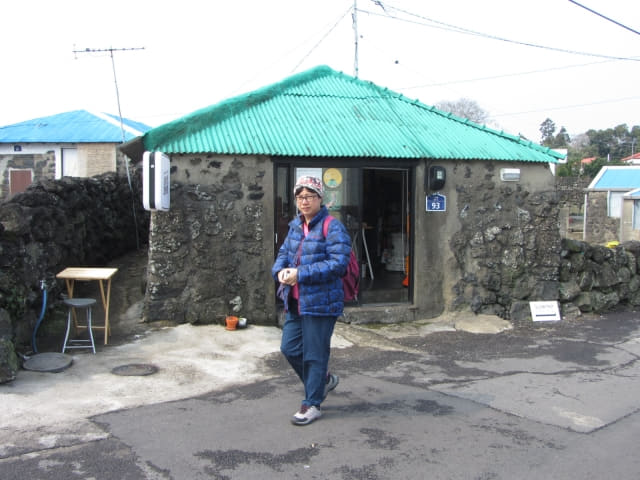
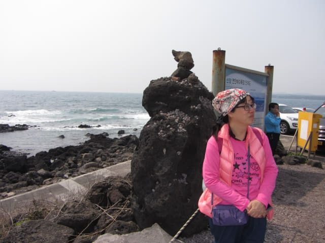

沿吾照里村莊中的小路走了約十五分鐘, 迎面是一個 T 字路口! 沒有路繼續往前走了! 頓時呆了一會, 連忙看看地圖。奇怪? 應該是沿小路一直走的, 那會有這個 T 字路口?

不敢相信, 莫非看錯! 再仔細看清楚地圖, 確實是沿小路一直走的, 那裡有這個 T 字路口?
看來地圖是錯的! 沒辦法, 唯有選擇左邊的路走。走了一會, 看見偶來的標誌, 再看看地圖, 我們真的是在地圖上「我們應該在這裡附近」的位置, 但何來那個 T 字路口?
經過一個旅客咨詢中心, 好像是 GEO Trail 旅客咨詢中心, 等了一會, 都沒有職員來, 沒法求助。
接著在村莊內四處走, 有些路是死胡同, 即是掘頭路, 有些不知通往那裡, 好像走進了迷宮。最後再嘗試循偶來標誌走, 走了一會, 又返回剛才的 T 字路口!
再看清楚偶來標誌的方向。Oh! My God! 偶來標誌竟然又指往吾照里入口的方向! 不是往涉地可支的方向! 唉! 地圖根本完全錯的!!!!
嘗試循偶來小路另一方向走
已經走了那麼多路才來到這裡, 沒理由就這樣放棄吧! 心想莫非又改了路, 不如再嘗試循另一方向的偶來小路走。
接著立即又掉頭循另一方向的偶來小路走。什麼心情也沒有, 隨便拍了幾張照片作記錄算了!
步行往涉地可支計劃失敗 改乘計程車
也不知走了多久, 來到這路口, 再往前走一會, 發覺勢色不對, 感覺前面已經是巴岳, 豈不是返回美麗度假村! 唉! 在這村莊中兜兜轉轉了好幾次, 頭都暈了! 看看手錶, 差不多早上十一時, 走了兩小時, 仍然「原踏步地」! 是這旅程其中一個最失敗的行程!
沒辦法, 宣佈投降了! 唯有改為乘計程車前往。
但這時又出現另一個問題: 那裡有計程車?
在吾照里村莊內走了那麼久, 不要說計程車, 經過的汽車幾乎也沒有, 所以在村莊內等不是辦法, 唯有往公路。
因往巴岳的前面一段路封閉, 便馬上掉頭走, 不久又返回那個在地圖上沒有的神秘「T 字路口」。這時思緒十分混亂, 只管沿村莊中的小路一直向前走, 沿途隨便拍了兩張照片。

可以乘巴士或計程車往涉地可支
一直「盲中中」的向前走, 終於走出了村莊, 迎面是一條高速公路。看見馬路對面有一個巴士站, 便匆匆走到那裡。巴士站名是「오조리상동입구」。看看巴士路線, 有我們熟悉的701號巴士和910號巴士, 我們便是從表善乘701號巴士來城山的, 那麼, 這巴士路線是可以往涉地可支的, 相信910號巴士也可以, 只是不知什麼時間會有巴士。濟州島的巴士路線真是很簡單, 只要搭對方向就可以。
最後決定: 如果有計程車來, 便乘計程車; 如果有巴士來, 便乘巴士!
結果, 等了十多分鐘, 經過的計程車真是很久, 但不管車上有沒有乘客, 都沒有停下來。也倒是, 韓國和香港不同, 地方那麼大, 計程車那會在街上四處找客, 汽油都蝕埋啦, 肯定都是 On Call 才開車, 唯一希望是剛剛在附近落客啫! 看來機會真是非常渺茫!
正打算安心等巴士來, 突然間有一輛計程車從前面左邊的村莊內駛出來, 心想會不會剛剛在村莊內落了客, 便連忙不斷揮手。
哈哈~~~~ 計程車在巴士站旁停下來。
按原定計劃, 我們是步往新陽涉地岬海邊 (신양섭지코지해변), 然後以逆時針方向把涉地可支遊覽一圈, 所以告訴計程車司機我們想往 「신양섭지코지해변」。計程車司機想了一會, 便馬上開車。
涉地可支 (섭지코지 Seopjikoji) 海邊入口
計程車司機可能以為我們寫錯了地方, 當經過新陽涉地岬海邊 (신양섭지코지해변)時沒有停下來, 繼續沿海濱道路一直高速行駛, 我們恐怕溝通困難, 也沒有叫司機停下來, 最後在一個很大、非常繁忙的停車場停下來, 應該是涉地可支海邊的入口。車資是5,600韓元。
下了車, 停車場旁便是一望無際的大海。看看手錶, 約中午十二時, 花了三小時的時間, 終於來到涉地可支, 既氣憤, 又興奮!


{kind=link}
{kind=link}
{kind=link}
{kind=link}
{kind=link}